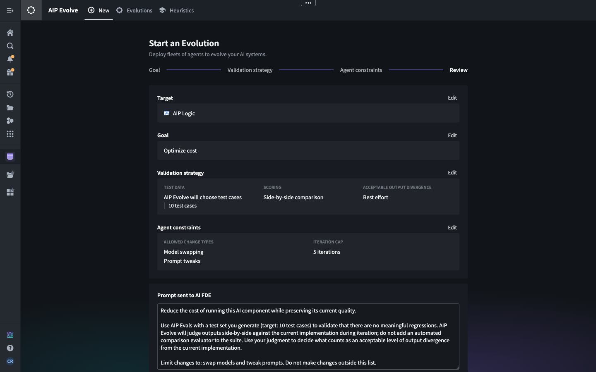
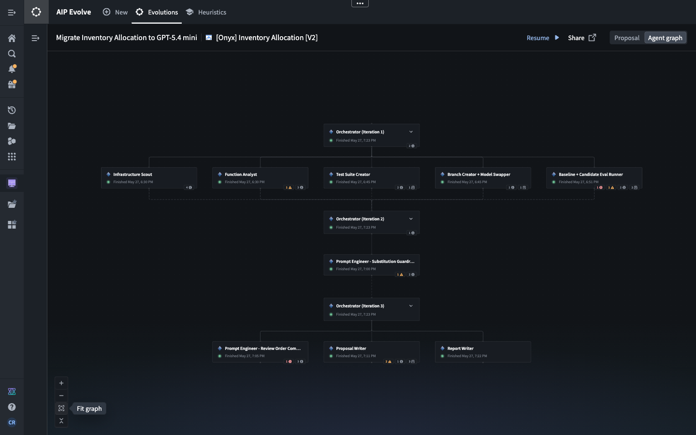
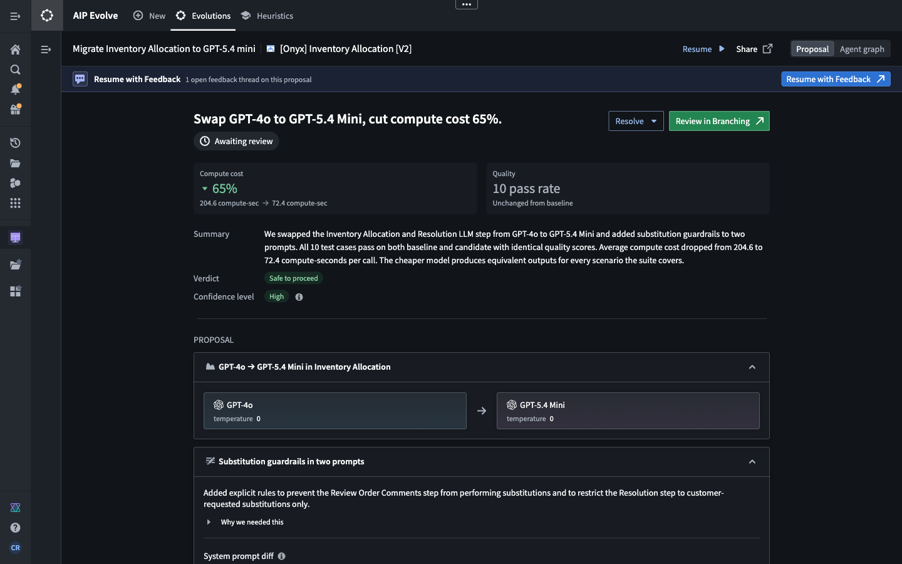

AIP Evolve coordinates fleets of AI FDE agents to improve AI systems in Foundry. You define a target, goal, validation strategy, and limits for an evolution. AIP Evolve then launches AI FDE to explore and validate possible changes and presents the resulting proposal and agent activity for review.
Use AIP Evolve to migrate models, reduce cost or latency, improve evaluation scores, or pursue a custom goal.
Before you use AIP Evolve:
Consider an organization that uses an AI-powered inventory allocation workflow to interpret customer orders and determine how to fulfill them. The organization wants to reduce the workflow's compute cost without introducing meaningful regressions.
In the New tab, select the workflow as the target and choose Optimize cost. For this evolution, AIP Evolve is configured to select 10 representative test cases and compare outputs side by side. Agents may swap models and adjust prompts over a maximum of five iterations. Review the generated prompt, then select Evolve to open AI FDE and start the evolution.

AIP Evolve coordinates agents to inspect the workflow, create test cases, make candidate changes, and evaluate candidate outputs against the baseline. Open Agent graph to follow this activity and inspect the agents' goals, insights, and artifacts. In this example, the agents completed three iterations.

When the agents finish, open Proposal to review the recommended changes and supporting evidence. In this example, the proposal recommends replacing GPT-4o with GPT-5.4 Mini and adding guardrails to two prompts. All 10 test cases passed for both the baseline and candidate, while average compute cost decreased by 65%, from 204.6 to 72.4 compute seconds per call.

Review the validation results, output comparisons, confidence assessment, and limitations before accepting a proposal. When applicable, select Review in Branching to inspect the branch proposal in Global Branching. Select Resume to continue the evolution in AI FDE with optional additional instructions.